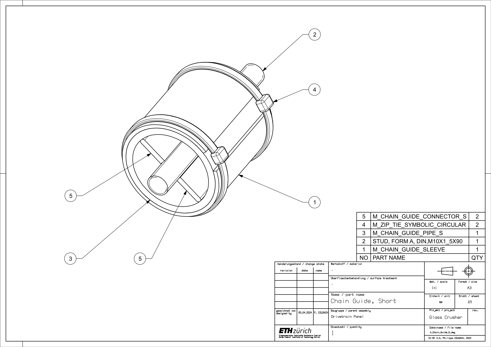

Prototype Construction
Table of Contents
2. Sub-assemblies
2.1. Base Frame
2.2 Crank
2.3 Crank Side Panel
2.4 Chain Guides
2.5 Drivetrain Panel
2.6 Roller Mounting Platform
2.7 Roller Bearing Brackets
2.8 Rollers
2.9 Sprocket Module (Large)
2.10 Sprocket Module (Small)
2.11 Motorcycle Chain
2.12 Upper Side Panels
2.13 Cover
3. Full Assembly
1 Overview
The technical drawings should provide enough information on their own to reproduce the parts. These instructions therefore assume that the reader has already prepared all the parts and that the only remaining step is their assembly. They furthermore assume that the reader wants to make an identical copy of the crusher; due to dimensional dependencies, any modification made to one part may negatively affect how well, if at all, others are going to fit.
It should be noted that some of the assembly instructions might be difficult to reproduce without assistance from a second person.
2 Sub-assemblies
2.1 Base Frame
Start by welding the connecting bars (1) & (8) to the corner profiles (6) & (7) - numbered parts shown in Figure 2. Weld the main funnel panels (3) to the corner profiles, then add the funnel’s side panels (2) and the extensions (4) & (5). Make sure to leave enough space between the funnel panels (3) and the M10 screw slits on the corner profiles (6) & (7) so that it is still possible to fit in an M10 nut later.
2.2 Crank
The crank consists mostly of pipes and pipe fittings screwed together, but a couple of welds are required. It is easiest to start with the latter. Weld the sprocket plate (3) onto the crank’s shaft (2) - numbered parts shown in Figure 4. Make sure the plate is centered relative to the pipe and remember to leave out the screw-adjacent sections, as there might not be enough space for the screw head (10) otherwise. Now the sprocket (1) can be mounted onto the plate and the rest of the pipes can be screwed onto the shaft. Do not forget to put the sleeve (4) over the crank’s handle (9), although it can easily be added later.
2.3 Crank Side Panel
Weld the corner bracket (4), its spacer (3), and the stud (1) to the panel (2) - numbered parts shown in Figure 7. For the bearing brackets, either start by welding the bracket base (7) to the panel and then finish the bracket from there or build the brackets independently and weld them to the panel once they are finished. Either way, precision is key: A precise placement ensures a smooth drivetrain motion.
It is equally important to weld the junction between the bracket base (7) and bracket side (8) on the inside first, and only afterwards on the outside, to make sure the side pieces are going to exert a clamping force on the bearing (5). Once the side pieces are welded, the best approach is to mount the bearings on the crank’s shaft first, then place them into their respective bracket and in a last step, add each bracket’s top piece (6).
2.4 Chain Guides
The long and short chain guides both follow the same assembly scheme, which is why only the short one’s is described here. Start by welding the connecting pieces (5) to the stud (2), then weld it to the pipe’s inner wall (3) - numbered parts shown in Figure 10. Add the sleeve (1) and fix it in place using two zip ties (4).

2.5 Drivetrain Panel
Next up is the drivetrain panel. Start by welding the roller platform (9) to the panel (7) - numbered parts shown in Figure 13. Use two M10 screws to facilitate their alignment. Add the two inserts (9) and flatten the welds. Add the flat mounting bar (2), its supports (3) & (4), and the corner profile (5). Finish it up by installing the chain guides. Make sure to place the short one (1) into the corner profile (5), and the longer ones (8) into the flat bar (2).
2.6 Roller Mounting Platform
Weld the two inserts (2) to the roller platform (1) and flatten the welds - numbered parts shown in Figure 15.
2.7 Roller Bearing Brackets
The construction procedure is identical for both the movable and fixed brackets. Start by welding the bracket’s side pieces (7) to the base (1) - numbered parts shown in Figure 18. Add the backplate (4) and use the clamping plate (3) to hold the bearing (2) in place.
2.8 Rollers
Weld the ten square profiles (3) to the roller body (1) - numbered parts shown in Figure 21. Make sure to keep an even spacing between the profiles to avoid collisions during operation. The last step consists of adding the bearing brackets (2) to the roller.
2.9 Sprocket Module (Large)
Weld the plate fixations (5) to the backplate (3) - numbered parts shown in Figure 24. To ensure a good fit, it is best to only weld one of the fixation pieces at first, then mount the backplate plate onto the shaft using the two screws (4) and the second fixation piece to temporarily hold it in place, and only then weld the second fixation piece to the plate. Remember that the roller shafts have a flat cutout and that the centerline between the plate fixations does not align with the roller’s center of rotation. Next, weld the two screw heads (4) to the plate fixation. Mount the small sprocket (2) on the front plate (1) before attaching everything to the large sprocket (4).
2.10 Sprocket Module (Small)
Add the plate fixations (6) to the backplate (2), analogously to the large sprocket module - numbered parts shown in Figure 24. Attach the sprocket (3) to the front plate (1), then mount the front plate to the backplate.

2.11 Motorcycle Chain
If the chain has more than 66 links, it will most likely have to be shortened.
2.12 Upper Side Panels
Weld the stud (3) to the panel’s (2) slot - numbered parts shown in Figure 31. The two panels must have their stud on opposite sides to make sure they are both pointing away from the crusher once installed.
2.13 Cover
To make sure the cover fits the way it should, it is recommended to build the cover directly on top of the crusher. To do so, proceed as follows. First, attach the upper side panels, the crank side panel and the large side panel to the frame. Mark the position of the large funnel plate (5) on the inside of the crusher’s upper side panels - numbered part list shown in Figure 34. Make sure the panel is aligned with the marking, then weld the funnel support (2) to it. Next, mark the position of the smaller funnel panel (6) on the inside of the upper side panels. Place both the larger and smaller funnel panel into the crusher, make sure they are aligned with their marking, then weld the side panels (9) to them. Add the chute plate (7) and its side pieces (12). If it did not already do so before, the cover structure should be able to maintain its position on its own by now. With the cover structure still inside the crusher, place the cover supports (3) & (8) onto their respective pin on the upper side panels. Make sure they are vertically aligned, then weld them to the chute’s side pieces (12) and subsequently add the chute supports (11), the crossbar (4), and the two struts (10). Finally, attach the soft cover (1) and the front flaps (13) using zip ties (14) & (15).
3 Full Assembly
The recommended assembly order goes as follows. First, attach the large side panel (4), the crank side panel (6) with the crank (2), the drivetrain panel (5), the lower side panel (3), and the roller mounting platform (1) to the frame - numbered part list shown in Figure 36.
Next, place the rollers (6) & (7) into the frame (10) and fasten them to the roller platforms - numbered part list shown in Figures 37 and 38. Add the upper side panels (4) & (5) and the cover structure (3). Attach the two sprocket modules (8) & (9) to the rollers, then add the chain connecting the crank to the first roller (2) and finally the chain connecting the two rollers to each other (1).